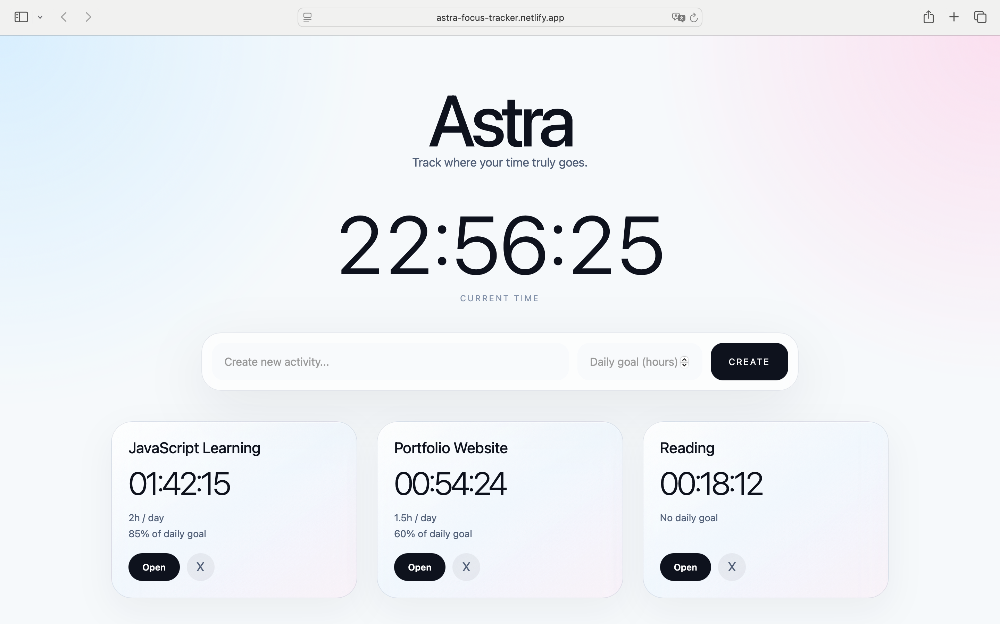
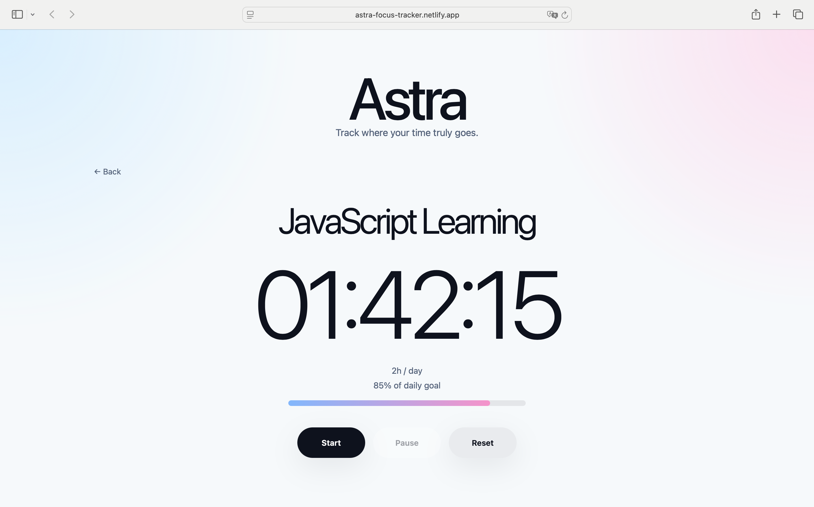
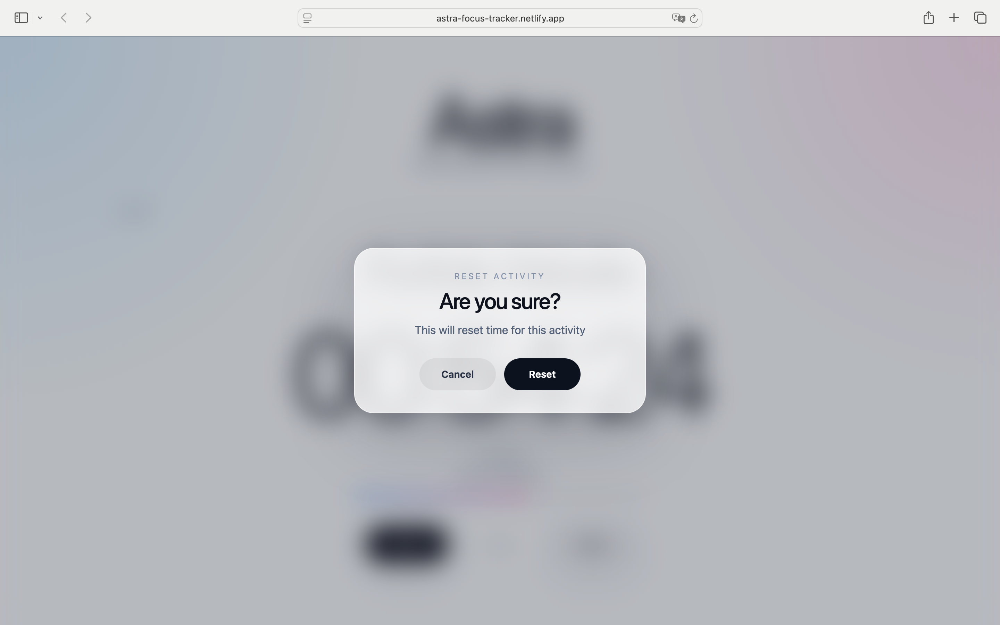
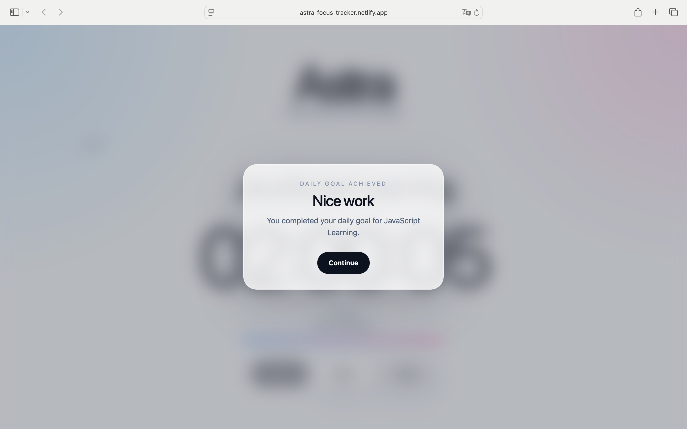
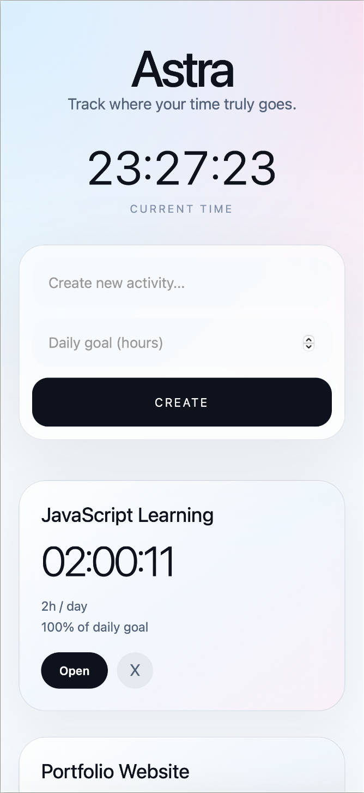
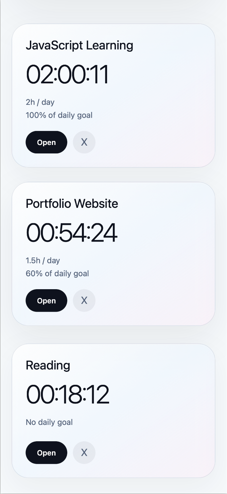
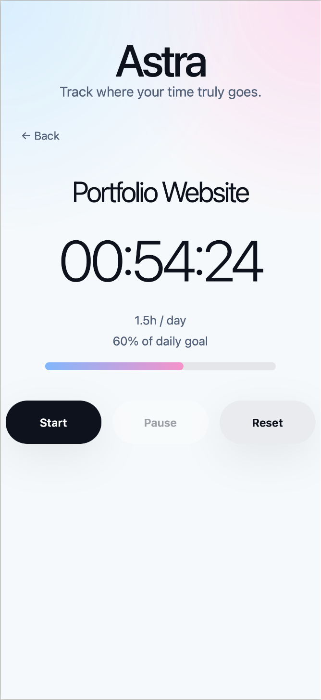

Portfolio Project
Astra
Minimalist focus time tracker built with Vanilla JavaScript, featuring timestamp-based timers, daily goals, live progress tracking and localStorage persistence.
Astra is a focused time tracking application I built to better understand frontend application architecture, state management and timer logic. The project helped me practice working with more complex state objects, timestamp-based calculations, localStorage persistence and synchronizing multiple parts of the UI with the same application state.
Desktop preview




Mobile experience
Astra was designed to stay clean and readable on smaller screens, with large timer typography, simple controls and comfortable spacing for mobile use.



What it does
Users can create activities, set daily goals, start and pause timers, track live progress, reset activity time and receive a goal achieved message when the daily goal is completed.
What made it important for me
Astra was important because it forced me to understand the difference between stored state, derived state and rendered UI. Instead of using a simple todaySeconds++ timer, I chose a timestamp-based approach using Date.now(). This was harder, but it helped me understand how real applications calculate elapsed time and keep UI synchronized with state.
What I learned
- Designing application state before building UI
- Separating stored state from derived state
- Building timestamp-based timer systems using Date.now()
- Synchronizing multiple UI elements with the same state
- Using localStorage to persist application data
- Updating interfaces with setInterval and live rendering
- Working with data-id attributes to connect DOM and state
- Planning application architecture before adding features
Main challenges
- Designing a timer system that supports Start, Pause and Resume
- Calculating elapsed time using timestamps instead of incrementing seconds
- Keeping Home View and Detail View synchronized in real time
- Separating stored state from calculated display values
- Implementing a daily reset system without losing application integrity
- Synchronizing progress tracking and UI updates across multiple views
- Persisting application state correctly through localStorage